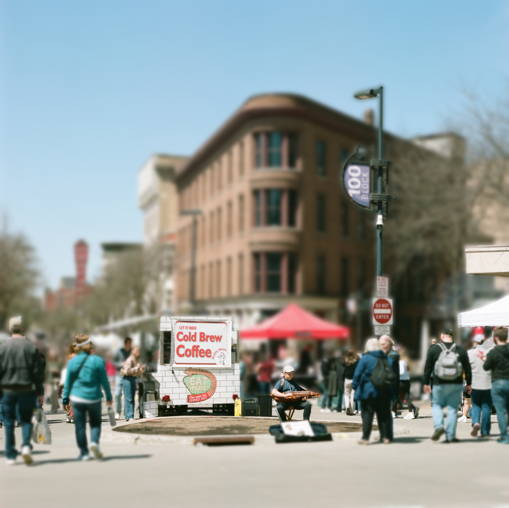
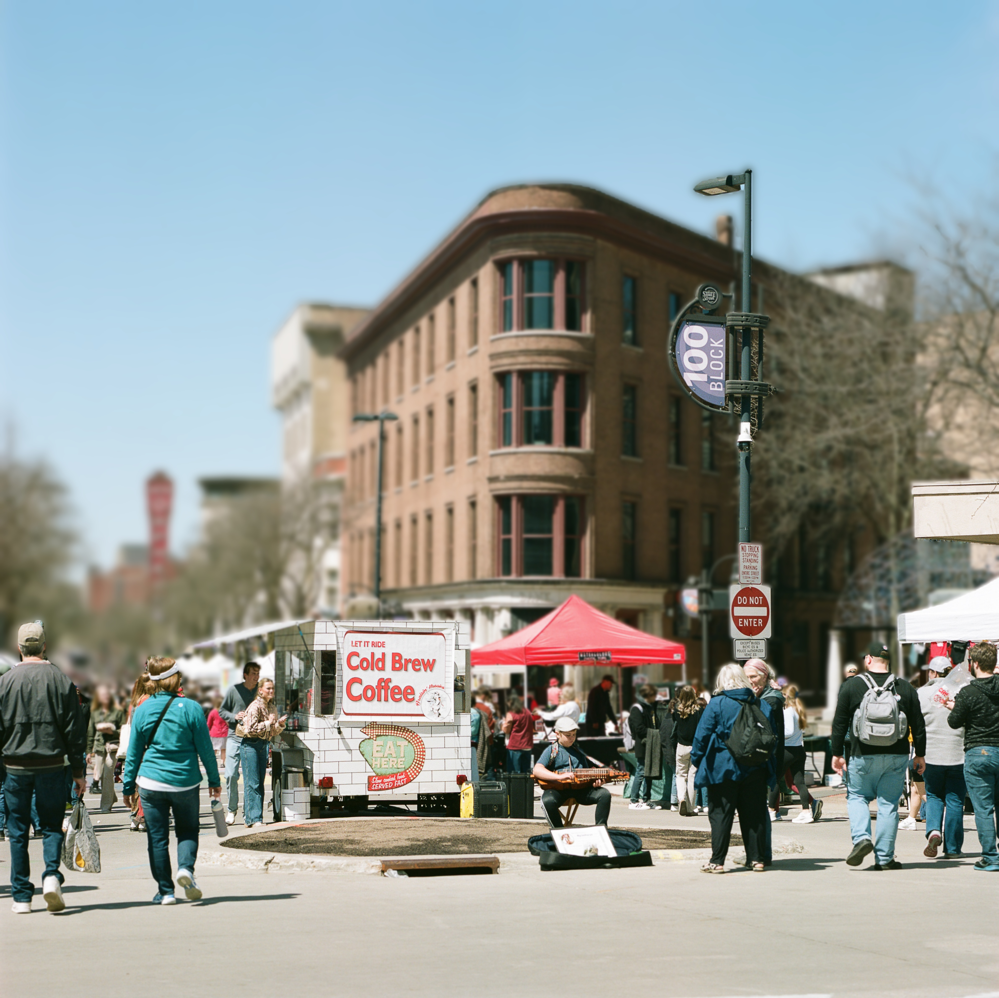
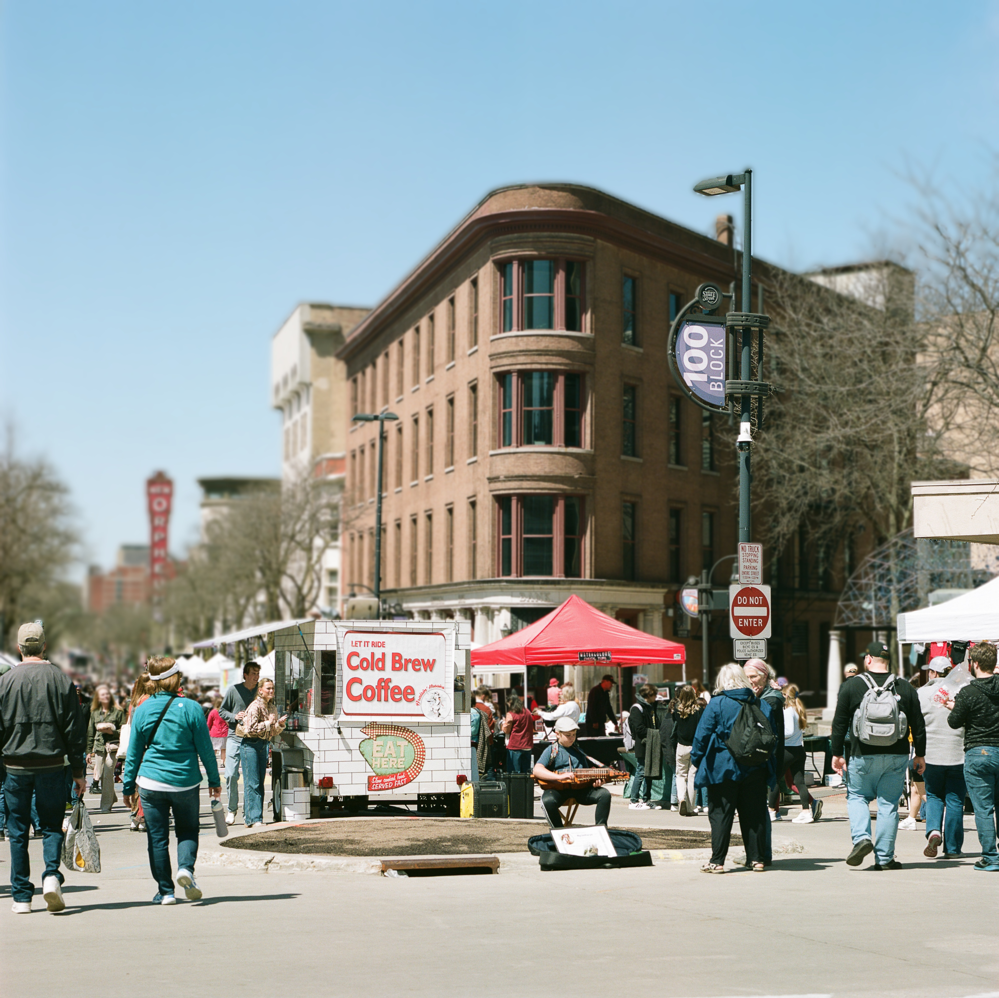

Post-Capture Single Image Refocusing
University of Wisconsin-Madison | CS 566 - Computer Vision
Abstract
We present a complete pipeline for post-capture refocusing of single images using deep learning-based depth estimation. Our system enables users to change the focus point and depth-of-field characteristics of a photograph after it has been taken, simulating different camera settings and creative focus effects. The pipeline consists of three key stages: (1) monocular depth estimation using Depth Anything V2, (2) all-in-focus image reconstruction with Restormer, and (3) physically-based depth-of-field simulation with customizable camera parameters including focal length, aperture, and focus distance.
Motivation
Traditional photography requires careful consideration of focus and depth-of-field at the time of capture. Once a photo is taken, these settings are fixed. Our project addresses this limitation by enabling post-capture refocusing through computational photography techniques. By combining state-of-the-art monocular depth estimation with physically-accurate blur simulation, we can retroactively adjust the focus plane and aperture characteristics of any photograph.
This technology has practical applications in photography workflows, allowing photographers to experiment with different creative choices after shooting, and in mobile photography where physical aperture control is limited.
Method Overview

Complete refocusing pipeline: from single RGB input to customizable depth-of-field output
Depth Estimation
We use Depth Anything V2, a Vision Transformer-based monocular depth estimation model, to predict dense depth maps from single RGB images. The model employs a ViT-Large backbone pre-trained on massive datasets, providing robust zero-shot performance across diverse scenes.
- Bilateral filtering for edge-preserving smoothing
- Exponential mapping: Z = Z_min × exp(d × log(Z_max/Z_min))
- Median filtering to remove noise artifacts

RGB image → Dense depth prediction → Refined depth map
All-in-Focus Reconstruction
Using Restormer, a Transformer-based image restoration model, we generate an all-in-focus version of the input image by removing existing defocus blur. The model uses multi-head transposed attention and gated feed-forward networks for efficient high-resolution restoration.
- Handles spatially-varying defocus blur
- Preserves fine details and textures
- Works on single images without dual-pixel data

Defocused input → Restormer → Sharp all-in-focus image
Depth-of-Field Simulation
We simulate realistic depth-of-field by computing the Circle of Confusion (CoC) for each pixel based on its depth, selected focus distance, and camera parameters. The thin lens equation determines blur radius:
where:
A = focal_length / f_number (aperture diameter)
s = focus distance
z = depth at pixel
f = focal length
- Generate 20+ blur layers with varying Gaussian kernel sizes
- Map each pixel to appropriate blur layer based on CoC
- Blend layers with linear interpolation for smooth transitions

Depth + Focus → CoC Map → Blur Layers → Final refocused image
Interactive Results
Depth Map Visualization
Drag the slider to compare. Left side shows the original image, right side shows the predicted depth map.

Before and After Refocusing
Drag the slider to compare. Left side shows the original, right side shows the refocused result.

Circle of Confusion (CoC) Map
The CoC map shows blur intensity. Brighter = more blur.
Aperture Effects (f/1.0 to f/11.0)
Different apertures create varying bokeh effects. Smaller f-numbers = more blur.

Extreme bokeh
Very shallow DoF

Portrait standard

Moderate DoF
Deep DoF

Maximum sharpness
📊 Aperture Reference
| f-number | Size | Blur | Use Case |
|---|---|---|---|
| f/1.0 | Extra Large | Extreme | Cinematic portraits |
| f/1.4 | Very Large | Maximum | Low light, bokeh |
| f/2.8 | Large | Strong | Professional portraits |
| f/5.6 | Medium | Moderate | Group photos |
| f/8.0 | Small | Minimal | Landscapes |
| f/11.0 | Very Small | Near Zero | Maximum DoF |
Focus Sweep Animation
Watch the focus plane transition smoothly from near to far objects.

Key Features
- Interactive focus point selection via mouse click
- Customizable camera parameters (focal length, aperture, sensor size)
- Multiple rendering modes: basic, comparison, aperture sweep, focus animation
- Physically-accurate Circle of Confusion (CoC) computation
Implementation Details
Technical Stack
- Python 3.8+ with PyTorch
- Depth Anything V2 (ViT-Large backbone)
- OpenCV for image processing and interactive GUI
- NumPy for numerical computations
Circle of Confusion Formula
The blur radius for each pixel is computed using the thin lens equation:
Usage Example
Batch Processing
For processing multiple images with saved focus settings:
Challenges & Solutions
Depth Map Quality
Raw depth predictions sometimes contained noise and inaccurate edges. We addressed this through:
- Bilateral filtering to smooth depth while preserving edges
- Median filtering to remove salt-and-pepper noise
- Exponential depth mapping for more realistic distance distribution
All-in-Focus Reconstruction
Recovering sharp details from heavily blurred regions proved challenging. While Restormer improved local contrast, complete detail recovery from extreme defocus remains an open problem. Our system works best with moderately blurred inputs.
Performance Optimization
High-resolution processing was memory-intensive. We implemented:
- GPU acceleration (CUDA/MPS) for depth inference
- Layer-based rendering with efficient blur computation
- Batch processing pipeline for multiple images
Future Work
Depth Discontinuity and Edge Accuracy
Due to limitations in monocular depth estimation, the predicted depth maps often lack precise structure around object boundaries. As a result, when simulating large-aperture effects, edges between foreground and background objects appear unnaturally sharp or halo-like, revealing the depth estimation artifacts. Traditional noise-based or aperture-scaling blur methods fail to handle these discontinuities correctly, leading to visible outlines around objects.
Potential Solutions:
- Incorporate edge-aware or boundary-consistent loss functions during depth model training to better preserve depth discontinuities.
- Apply joint edge–depth refinement post-processing (e.g., guided filtering using image gradients) to align depth transitions with real edges.
- Explore multi-task learning frameworks that combine depth estimation with semantic segmentation or edge detection supervision for enhanced geometric consistency.
- Implement adaptive blur blending strategies that reduce halo artifacts in regions with high depth variance.
Other Possible Works
- Fine-tune Restormer on DPDD dataset for better deblurring
- Implement custom aperture shapes (hexagonal, octagonal bokeh)
- Add real-time preview for interactive refocusing
- Quantitative evaluation on benchmark datasets (NYU Depth V2)
- Edge-aware compositing to reduce halo artifacts
- Support for video refocusing with temporal consistency
References
[1] Yang, L., et al. (2024). "Depth Anything V2." arXiv preprint arXiv:2406.09414
[2] Zamir, S. W., et al. (2022). "Restormer: Efficient Transformer for High-Resolution Image Restoration." CVPR 2022
[3] Abuolaim, A., & Brown, M. S. (2020). "Defocus Deblurring Using Dual-Pixel Data." ECCV 2020
Code & Resources
GitHub Repository: github.com/your-repo/refocusing-project
Demo Video: youtube.com/your-demo